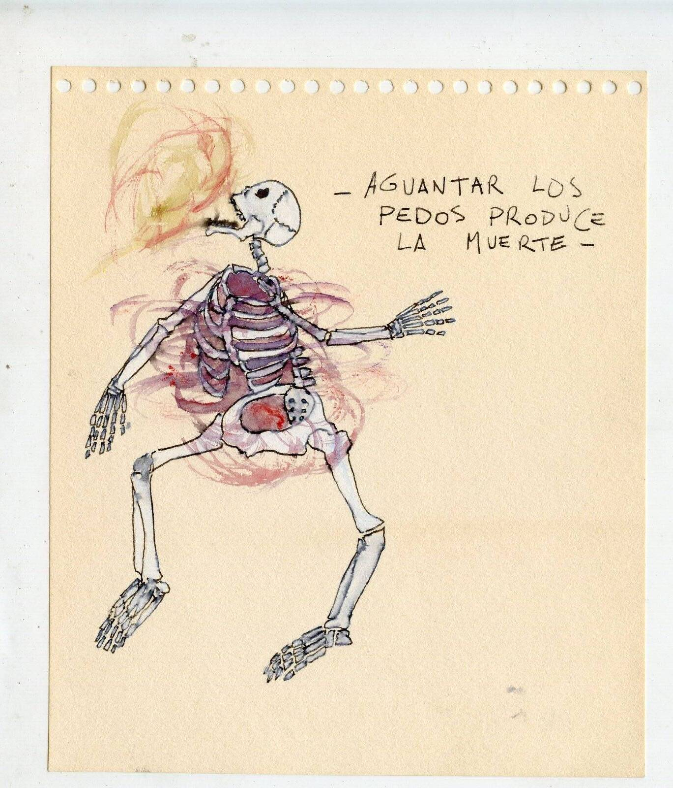
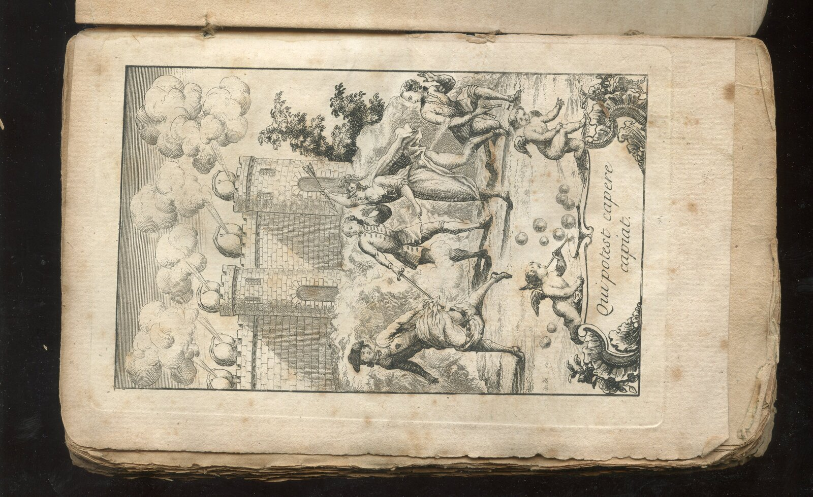
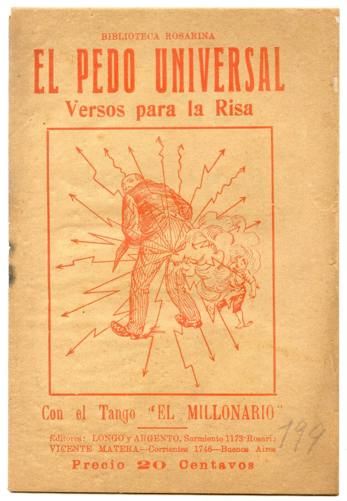
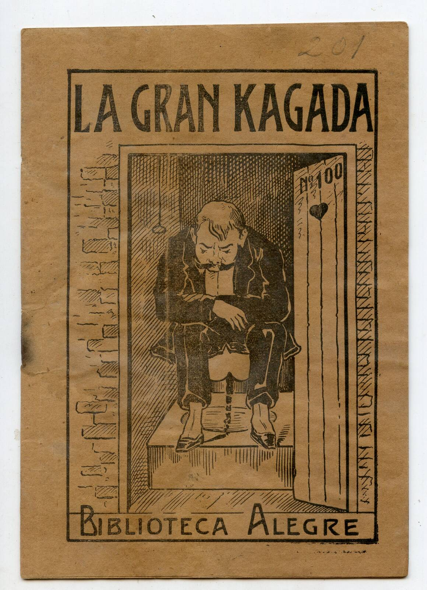
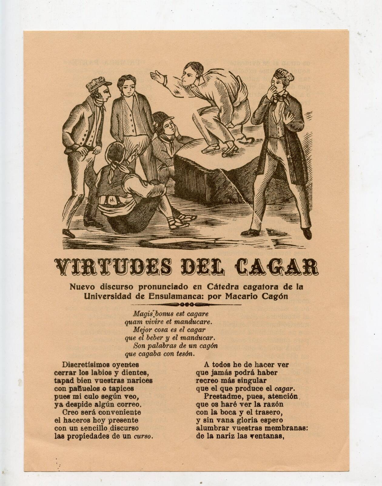

Un Libro de Mierda y al Pedo
Edición a cargo y prólogo Eduardo Orenstein
Ilustrado · Textos de Francisco Quevedo, Don P2 y KK, Pedorro, Togenar y Pierre-Thomas-Nicolas Hurtaut.
Y sí, este es un libro que trata de la mierda y de los pedos. O de los pedos y de la mierda, depende quién salga antes. El tema es maldito, aunque los productos que circulan por nuestras cañerías digestivas estén muy presentes sin que los puedan ocultar. Y como bien lo señaló Francisco de Quevedo, el genial poeta, “es más necesario el ojo del culo que los de la cara; por cuanto uno sin ojos en ella puede vivir, pero sin ojo del culo ni pasar ni vivir.” Esta es una antología que pretende honrar y dar reconocimiento a tan nobles materias y actividades pasando por autores clásicos, rarezas locales desconocidas como “La Gran K-gada”, y la una nueva y precisa traducción de “L’Art de péter” o “El Arte de tirarse pedos” de Pierre-Thomas-Nicolas Hurtaut, publicado en 1751 y donde además de clasificar los pedos, se puede aprender a hacer música con ellos.
Comprar